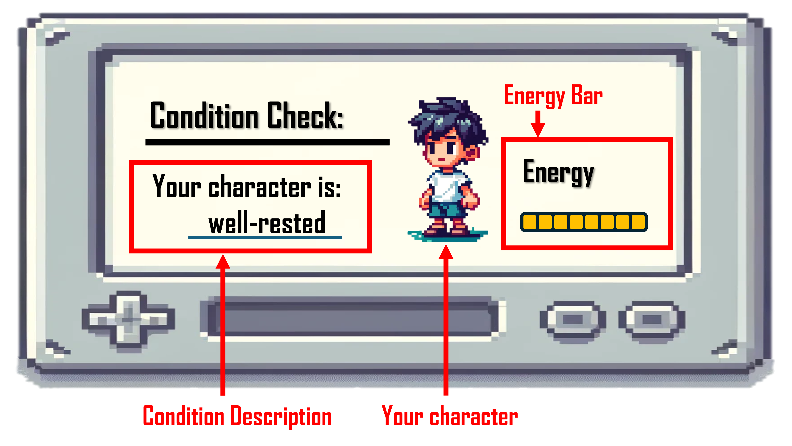
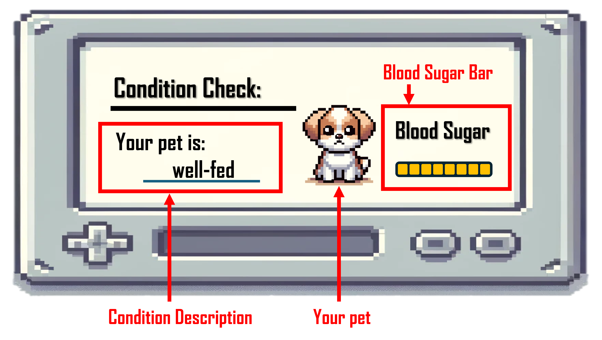
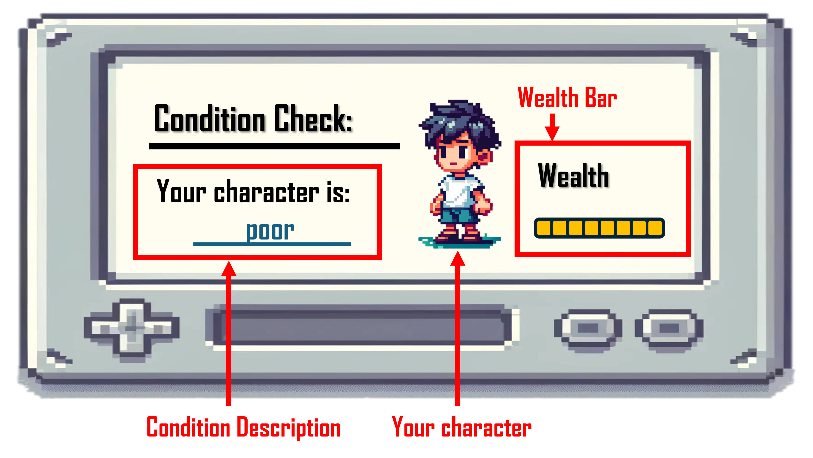

<!DOCTYPE html>
<html>
  <head>
    <title>Production Experiment</title>
    <!-- jQuery -->
    <script src="https://ajax.googleapis.com/ajax/libs/jquery/3.5.1/jquery.min.js"></script>
    <!-- Proliferate -->
    <script src="https://proliferate.alps.science/static/js/proliferate.js" type="text/javascript"></script>

    <script src="https://unpkg.com/jspsych@7.3.4"></script>
    <script src="https://unpkg.com/@jspsych/plugin-survey-text@1.1.3"></script>
    <script src="../plugin/plugin-html-multi-slider-response.js"></script>
    <script src="../plugin/plugin-html-button-response.js"></script>
    <script src="../plugin/plugin-fullscreen.js"></script>
    <link href="https://unpkg.com/jspsych@7.3.4/css/jspsych.css" rel="stylesheet" type="text/css" />
    <style>

      .consent-form {
        width: 707px;
      }

      .consent-form p, .consent-form li {
        text-align: left;
        font-size: 12px;
        line-height: 1.2em;
        margin: 5px 0;
      }

    </style>
  </head>
  <body></body>
  

  <script>

    var n_trials  = 54;

    var jsPsych = initJsPsych({
        show_progress_bar: true,
        auto_update_progress_bar: false, 
        on_trial_start: function() {

            if (jsPsych.getCurrentTrial().data && jsPsych.getCurrentTrial().data.is_experiment) {
                var progress = jsPsych.getProgress();
                jsPsych.setProgressBar(progress.current_trial_global / progress.total_trials); 
            } else {
                jsPsych.setProgressBar(0); 
            }
        },
        on_finish: function(data) {
          var vals = data.values()
          // check if the participant went through the experiment
          // or exited it during the consent forms
          if (vals.length > n_trials) {
            // Transmit data to Proliferate
            proliferate.submit({"trials": data.values()});
          }
        }
      });
    
      

    var fullscreenFunction = {
      type:jsPsychFullscreen,
      fullscreen_mode: true,
      message: '<p>Please enter fullscreen mode to continue the experiment.</p>',
      button_label: 'Enter Fullscreen',
      delay_after: 1000,
      data: { is_experiment: false }
    }

        //Define first part of consent form
    const consent1 = {
      type: jsPsychHtmlButtonResponse,
      stimulus: '<div class="consent-form"><p></p>' +
      '<p style="text-align:center;font-weight:bold;">ONLINE INFORMATION SHEET</p>' +
      '<p><strong>Title of Project</strong>: The cognitive basis of pragmatic inferences</p>' +
      '<p>This study has been approved by the RD Ethics Chair as LING-2021-01-21</p><p>&nbsp;</p>' +
      '<p><strong>Name, Address and Contact Details of Principal Investigator:</strong></p>' +
      '<p>' +
      'Richard Breheny (<a href="mailto:r.breheny@ucl.ac.uk">r.breheny@ucl.ac.uk</a>)<br>UCL Linguistics<br>Division of Psychology and Language Sciences<br>Chandler House<br>2 Wakefield Street<br>London WC1N 1PF</p><p>&nbsp;</p>' +
      '<p><strong>Other investigators:</strong></p>' +
      '<p>Sebastian Schuster, ADD YOUR NAME HERE</p>' +
      '<p>&nbsp;</p>' +
      '<p>We would like to invite you to participate in this research project. You should only participate if you want to. Choosing not to take part will not disadvantage you in any way. Before you decide whether you want to take part, please read the following information carefully. Please contact us if there is anything that is not clear or if you would like more information (<a href="mailto:s.schuster@ucl.ac.uk">s.schuster@ucl.ac.uk</a>).</p>' +
      '<p>&nbsp;</p>' +
      '<p><strong>Details of Study</strong></p>' +
      "<p>This study forms part of a research project under the supervision of Professor Richard Breheny in the Linguistics Department of the UCL Division of Psychology and Language Sciences which looks at how people process language. The study addresses the question of how people read more into communication than the actual words say. We will record participants' responses and responses may be timed.</p>" +
      '<p>&nbsp;</p>' +
      '<p><strong>Possible risks and benefits</strong></p>' +
      '<p>The testing session will take approximately <strong>15 minutes</strong> (including breaks). You are free to withdraw from the experiment at any time.  Once you have completed the experiment, you will be redirected to the recruitment platform you used to access our study, and you will be compensated for your time.</p>' +
      '<p>It is up to you to decide whether or not to take part. If you do decide to take part, you will be asked to provide an informed consent. Even after agreeing to take part, you can still withdraw at any time and without giving a reason.</p>' +
      '<p>All data are collected and stored in accordance with the provisions of the General Data Protection Regulations and the Data Protection Act 2018.</p><p>&nbsp;</p></div>',
      choices: ['Leave the study', 'Continue'],
      button_html: '<button class="jspsych-btn" style="transform: none; position: relative;  left:auto; bottom: auto;">%choice%</button>',
      on_finish: function(data) {
        if (data.response == "0") {
          jsPsych.endExperiment('Please return this study and close this window! Thank you for your interest.');
        }
      }

    };


    // Define second part of consent form
    const consent2 = {
      type: jsPsychHtmlButtonResponse,
      stimulus: '<div class="consent-form"><p></p>' +
      '<p style="text-align:center;font-weight:bold;">ONLINE CONSENT FORM</p>' +
      '<p><strong>Title of Project</strong>: The cognitive basis of pragmatic inferences</p>' +
      '<p>This study forms part of a research project under the supervision of Professor Richard Breheny in the Linguistics Department of the UCL Division of Psychology and Language Sciences. This study has been approved by the RD Ethics Chair as LING-2021-01-21</p>' +
      '<p>Please read the following information carefully:</p>' +
      '<ul>' +
      '<li>You have read and understood the information sheet explaining the project, risks and benefits.</li>' +
      '<li>You understand that you have the right to withdraw at any point during the study, for any reason, and without any prejudice.</li>' +
      '<li>You understand that you must not participate if you suffer from photosensitive epilepsy.</li>' +
      '<li>You consent to the processing of the anonymised data collected for the purposes of this study only and not for any other purposes.</li>' +
      '<li>You consent to the processing of the anonymised data collected for the purposes of this study only and not for any other purposes.</li>' +
      '<li>All data are collected and stored in accordance with the provisions of the General Data Protection Regulations and the Data Protection Act 2018. If you are concerned about how the data is being processed, please contact UCL in the first instance at data-protection@ucl.ac.uk</li>' +
      '</ul>' +
      '<p>If you would like to contact the Principal Investigator in the study to discuss this research, please e-mail <a href="mailto:r.breheny@ucl.ac.uk">r.breheny@ucl.ac.uk</a>.</p><p>&nbsp;</p></div>',
      choices: ['I do NOT consent (leave)', 'I consent (continue)'],
      button_html: '<button class="jspsych-btn" style="transform: none; position: relative;  left:auto; bottom: auto;">%choice%</button>',
      on_finish: function(data) {
        if (data.response == "0") {
          jsPsych.endExperiment('Please return this study and close this window! Thank you for your interest.');
        }
      }
    };


    var instruction = {
      type: jsPsychHtmlButtonResponse,
      stimulus: '<p> You are a player in a video game, and your goal is to earn money as quickly as possible. <br> Please follow the instructions to check the condition of your characters.</p >',
      choices: ['Continue'],
      data: { is_experiment: false }
    };
     
    var instruction_energy = {
      type: jsPsychHtmlButtonResponse,
      stimulus: '' +
        '<p> In the first part of the experiment, you will see screenshots like the one above that indicate how much energy your character has left.<br> On the following pages, the condition description will be incomplete.<br> Please use the sliders to indicate how likely you think it is that the screen would show the different statements.<br> If you think none of the options are likely, you can assign a high rating to the <emph>something else</emph> option.</p >',
      choices: ['Continue'],
      data: { is_experiment: true }
    };

    var instruction_pet = {
      type: jsPsychHtmlButtonResponse,
      stimulus: '' +
      '<p>In the second part of the experiment, you will see screenshots like the one above that indicate how well-fed your pet is.<br> Again, please use the sliders to indicate how likely you think it is that the screen would show the different statements.</p >',
      choices: ['Continue'],
      data: { is_experiment: true }
    };

    var instruction_wealth = {
      type: jsPsychHtmlButtonResponse,
      stimulus: '' +
      '<p> In the last part of the experiment, you will see screenshots like the one above that indicate how wealthy your character is.<br> Please use the sliders to indicate how likely you think it is that the screen would show the different statements.</p >',
      choices: ['Continue'],
      data: { is_experiment: true }
    };


    function createTrial(imageType, imageNumber, labels) {
    return {
        type: jsPsychHtmlMultiSliderResponse,
        stimulus: `` +
        '<p>How likely do you think the dialogue box will display the following sentences ? <br> Make sure that your responses sum up to 100.</p>',
        num_sliders: 3,
        force_total: 100,
        slider_labels: labels,
        slider_width: 800,
        prompt: '',
        data: { is_experiment: true }
    };
}

    // energy trials
    var energy_trials = [];
    for (let i = 1; i <= 9; i++) {
        energy_trials.push(createTrial('energy', i, ["Your character is tired", "Your character is exhausted", "<em>something else</em>"]));
    }

    var energy_trials_round2 = [];
    for (let i = 1; i <= 9; i++) {
        energy_trials_round2.push(createTrial('energy', i, ["Your character is tired", "Your character is exhausted", "<em>something else</em>"]));
    }

    // pet trials
    var pet_trials = [];
    for (let i = 1; i <= 9; i++) {
        pet_trials.push(createTrial('pet', i, ["Your pet is hungry", "Your pet is starving", "<em>something else</em>"]));
    }

    var pet_trials_round2 = [];
    for (let i = 1; i <= 9; i++) {
        pet_trials_round2.push(createTrial('pet', i, ["Your pet is hungry", "Your pet is starving", "<em>something else</em>"], ));
    }

    // wealth trials
    var wealth_trials = [];
    for (let i = 1; i <= 9; i++) {
        wealth_trials.push(createTrial('wealth', i, ["Your character is poor", "Your character is destitute", "<em>something else</em>"], ));
    }

    var wealth_trials_round2 = [];
    for (let i = 1; i <= 9; i++) {
        wealth_trials_round2.push(createTrial('wealth', i, ["Your character is poor", "Your character is destitute", "<em>something else</em>"]));
    }

 


    var timeline_energy = [];
    timeline_energy = timeline_energy.concat(energy_trials); // adding first round trials
    timeline_energy = timeline_energy.concat(energy_trials_round2); // adding second trials

    var timeline_pet = [];
    timeline_pet = timeline_pet.concat(pet_trials); // adding first round trials
    timeline_pet = timeline_pet.concat(pet_trials_round2); // adding second trials 


    var timeline_wealth = [];
    timeline_wealth = timeline_wealth.concat(wealth_trials); // adding first round trials
    timeline_wealth = timeline_wealth.concat(wealth_trials_round2); // adding second trials

    var feedback = {
      type: jsPsychSurveyText,
      questions: [
        {prompt: 'If you encountered any technical difficulties, found anything odd,<br> or if you have any other comments about the experiment that you would like to share with us,<br> please type them in the box below:', rows: 5}
      ],
      choices: ['Finish'],
      data: { is_experiment: true }
    }
    
    // randomdized
    var shuffled_timeline_e = jsPsych.randomization.shuffle(timeline_energy);
    var shuffled_timeline_p = jsPsych.randomization.shuffle(timeline_pet);
    var shuffled_timeline_w = jsPsych.randomization.shuffle(timeline_wealth);

    timeline = [fullscreenFunction].concat(consent1, consent2, instruction, instruction_energy, shuffled_timeline_e, instruction_pet, shuffled_timeline_p, instruction_wealth, shuffled_timeline_w, feedback)


    // run
    jsPsych.run(timeline);


  </script>
</html>